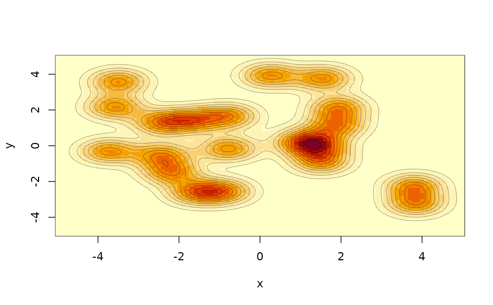
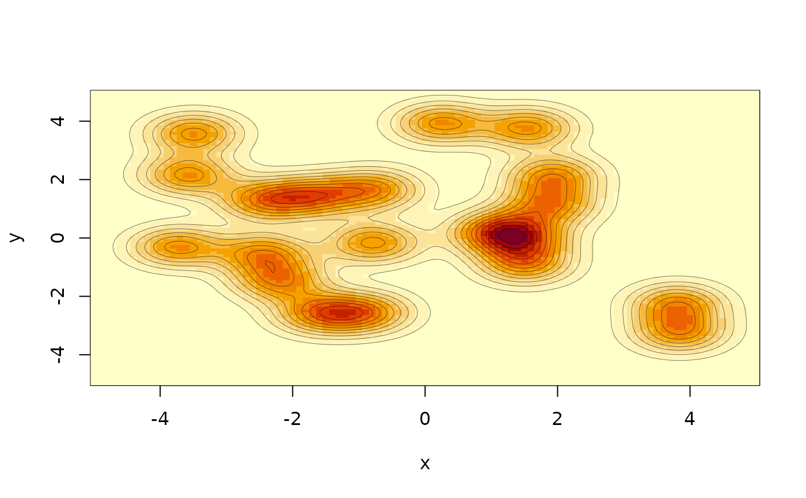

Load example models from monty. These models exist so that we can create (hopefully) interesting examples in the documentation without them becoming overwhelming. You should probably not use these for anything other than exploring the package.
Source:R/example.R
monty_example.RdLoad small, ready-made target distributions for demonstrations, tests, and examples. These models exist so that we can create (hopefully) interesting examples in the documentation without them becoming overwhelming. All examples contain an analytic gradient and can thus be also used to explore gradient-based samplers such as monty_sampler_hmc.
Value
A monty_model object.
Supported models:
Each model has arguments that are passed through as ... in
monty_example and are used to set up the example. This creates
a monty_model object that will accept parameters, which are
the values in the argument parameters passed to
monty_model_density.
banana
The banana model is a two-dimensional banana-shaped function, with
strong local correlation. This example was picked because it is
useful for illustrating the limitations of random-walk proposals.
The model has two parameters alpha and beta and is based on
two successive draws, one conditional on the other.
You can vary the argument sigma for this model on creation, the
default is 0.5
gaussian
A multivariate Gaussian centred at the origin. Takes a variance-covariance-matrix as its argument. Parameters are letters a, b, ... up to the number of dimensions.
ring
A two-dimensional ring-shaped density whose log-density is
proportional to $-(\|x\|-r)^2/(2\,sd^2)$. Includes an analytic
gradient and a direct sampler in polar coordinates. The
constructor takes that arguments r (default 3) and sd (default
0.2), and the parameters of the monty_model are x1 and x2
(corresponding to the two dimensions of the polar coordinates).
Increasing r or decreasing sd will make the ridge of high
probability space narrower; this is easiest to visualise in true
densities (rather than log density).
Examples
# Small helper function to make the plotting easier
show_2d_example <- function(m, rx, ry = rx, n = 101) {
x <- seq(rx[[1]], rx[[2]], length.out = n)
y <- seq(ry[[1]], ry[[2]], length.out = n)
xy <- unname(t(as.matrix(expand.grid(x, y))))
z <- exp(matrix(monty_model_density(m, xy), n, n))
image(x, y, z)
contour(x, y, z, add = TRUE, drawlabels = FALSE,
lwd = 0.5, col = "#00000088")
}
# Banana target
m_banana <- monty_example("banana", sigma = 0.2)
show_2d_example(m_banana, c(-0.5, 1.5), c(-1.5, 1.5))
 # Ring target with radius 3 and narrow thickness
m_ring <- monty_example("ring", r = 3, sd = 0.25)
show_2d_example(m_ring, c(-4, 4))
# 2D Gaussian mixture with 20 components
m_mixture <- monty_example("mixture2d", k = 20, sd = 0.5, spread = 4)
show_2d_example(m_mixture, c(-5, 5))

# Ring target with radius 3 and narrow thickness
m_ring <- monty_example("ring", r = 3, sd = 0.25)
show_2d_example(m_ring, c(-4, 4))
# 2D Gaussian mixture with 20 components
m_mixture <- monty_example("mixture2d", k = 20, sd = 0.5, spread = 4)
show_2d_example(m_mixture, c(-5, 5))
